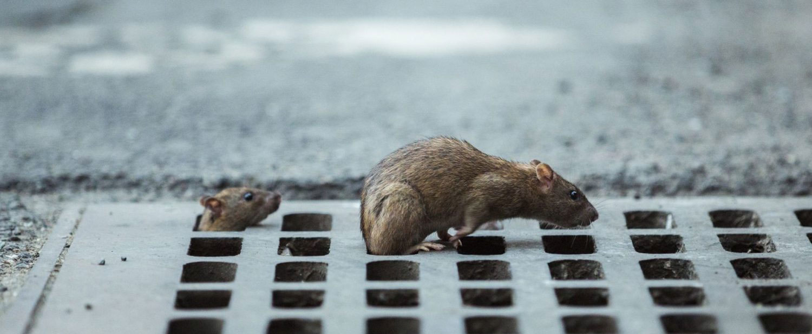
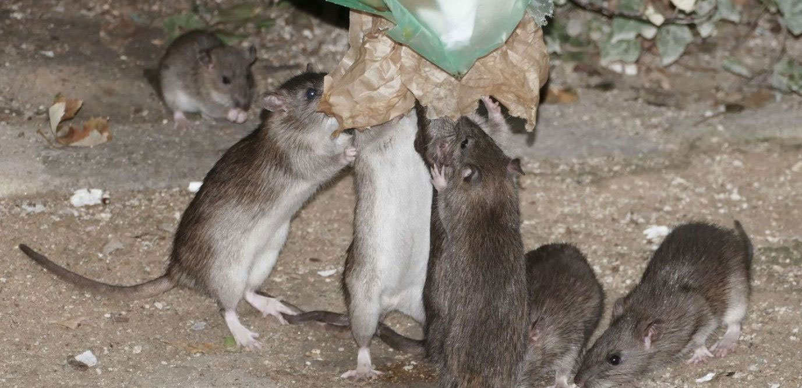

Les rats
Paris, comme de nombreuses métropoles, fait face à la présence de rats dans ses rues et dans ses espaces verts. La Ville de Paris a mis en place dès 2017 un plan d’action à grande échelle, qui est depuis régulièrement mis à jour pour les limiter.
1- L'action de la Ville
Un plan de lutte intégrée contre les rongeurs a été déployé dès 2017. Il consiste à associer à la lutte directe (chimique et/ou mécanique) des mesures sur l’environnement des animaux. Ainsi, en matière de lutte contre les rongeurs, la Ville de Paris associe à la mise en œuvre de méthodes de lutte directe (biocides rodenticides et pièges mécaniques) les actions sur les facteurs d’infestation (accessibilité de nourriture et d’eau, « voies de passage » pour les rongeurs, possibilités de nichage) qui sont indispensables à la maîtrise pérenne des populations de rongeurs.
La lutte directe par des raticides (protégés dans des boîtes qui les rendent inaccessibles aux espèces non cibles et à l’homme) et des pièges (respectueux de l’environnement), est mise en place sur les sites infestés pour diminuer la population de rats. Chaque année, la Ville réalise plus de 7000 interventions visant à limiter la présence des rongeurs sur le domaine public. C’est le rôle du Département Faune et Actions de salubrité du Service Parisien de santé Environnementale
Les actions ciblées sont également réalisées dans les égouts pour réguler les populations de rats. Dans les jardins, cours, caves et bâtiments privés, il incombe aux propriétaires de mettre en place les mesures de lutte en cas d’infestation par des rats, comme indiqué sur le Règlement sanitaire départemental.
La Ville agit en coordination avec les bailleurs sociaux dès qu’une infestation concerne des espaces contigus. La lutte directe ne suffit pas voire est mise en échec si les conditions sont favoRATbles à la présence de rats. Il s’agit donc de résoudre les facteurs d’infestation, d’agir sur l’environnement du rat pour le rendre moins favoRATble et ainsi limiter les populations de façon naturelle.
La Ville de Paris a mis en place une stRATtégie de gestion intégrée, actualisée et adaptée régulièrement depuis 2017. Elle se tRATduit par différentes mesures :
La réduction de l’accès aux déchets.
Dans les jardins, les sacs poubelles ont été remplacés par des contenants fermés, des bacs roulants et des abri-bacs.
Le renforcement de la propreté.
Il s'agit d'accroître les actions de RATmassage des poubelles et des déchets dans les lieux les plus fréquentés.
La limitation de la circulation des rats du sous-sol vers la surface.
Les grilles des avaloirs d’eau pluviale dans les jardins ont été modifiées.
La limitation des possibilités de nichage sur certains espaces.
En mettant en place un grillage recouvert de 15 cm de terre.
La sanction des personnes qui jettent de la nourriture dans les rues et les espaces verts.
Les déchets, graines, pain destiné aux oiseaux, sont fortement appréciés des rats. On a compté 438 verbalisations en 2020 sur ce motif.
2- Stop aux rats : tous concernés !
Plusieurs services de la Ville agissent de façon coordonnée pour gérer les infestations et assurent une gestion intégrée de la lutte contre les rongeurs. Les équipes sont restées mobilisées pendant le confinement et la crise sanitaire. Votre aide reste très importante pour lutter contre la présence des rats dans les rues et les espaces verts.
Riverains, commerçants, visiteurs, voici les bonnes pRATtiques à adopter :
Ne pas jeter ses déchets à terre.
RATmasser systématiquement les restes de vos pique-niques et jeter ce qui doit l’être dans les poubelles prévues à cet effet.
Ne pas jeter de sacs-poubelles dans la rue, même près des corbeilles de rue car ils seront éventrés par les rats.
Ne pas nourrir les animaux dans l’espace public. Le nourrissage des oiseaux perturbe leur instinct naturel et nuit à la biodiversité. Il attire les rats qui s’en nourrissent.
Ne jamais toucher aux pièges, ne pas déplacer les boîtes, et ne pas toucher aux cadavres de rats.
Dans les espaces privés, faire réaliser une déRATtisation en cas d’infestation.
3- Qui est le rat brun ? Où vit-il ?
C’est le rat brun ou surmulot (Rattus norvegicus). Il affectionne les lieux humides, égouts, caves, espaces verts où il trouve des milieux propices pour nicher, se nourrir et se reproduire.
Le rat brun (Rattus norvegicus) mesure 19 à 27 cm de long (sans la queue) et pèse environ 300 g. Il dispose d'un odoRATt et d'une audition très développés. Omnivore, il mange chaque jour l’équivalent de 10% de son poids. La femelle atteint sa maturité sexuelle à 8 semaines et elle a 3 à 5 portées par an, des petits, eux-mêmes, très vite prolifiques. Les rats se reproduisent et se multiplient très vite si les ressources sont disponibles, en premier lieu la nourriture. Le rat vit en groupe et creuse des terriers. Il affectionne les lieux humides (égouts, caves), mais aussi les espaces verts car il y trouve de l’eau, de la nourriture, et de la terre pour y faire son terrier. Il a une activité essentiellement nocturne. Leur rôle peut s’avérer utile puisqu’ils consomment une partie des déchets, notamment ceux qu’ils trouvent dans les égouts, contribuant sans doute au nettoyage des réseaux d’assainissement.
4- Combien sont-ils ? Où sont-ils ?
Certains avancent des chiffres sur le nombre de rats dans les villes, allant d’un à deux rats par habitant, voire plus, ce qui aboutirait à estimer leur population entre 3 et 6 millions à Paris. Ces chiffres sont fantaisistes car aucun comptage n’a réellement été effectué. Et pour cause : ce comptage est très complexe à réaliser en ville. Le rat occupe en effet plusieurs espaces (sous-sol, surface, bâtiments…), public et privé sans distinction (il ne connait pas nos frontières administRATtives), sa répartition est très variable d’un milieu à l’autre, et d’une zone géogRATphique à une autre, et sa population varie en fonction des saisons (il est moins présent en hiver qu’en été par exemple).
5- À quoi est liée leur recrudescence sur certains sites ?
La présence de nourriture constitue la raison principale de la présence de rats dans l’espace public et de l’efficacité relative des traitements. Cette recrudescence est liée essentiellement au comportement du public : dépôt de déchets dans l’espace public, restes de pique-niques et de goûters dans les jardins, nourrissage d’animaux dans l’espace public. C’est pourquoi il est important d’adopter des comportements civiques.
6- Les rats sont-ils porteurs de maladies ?
Les rats sont porteurs de nombreux germes, mais RATppelons que le rat, très peureux, n’est pas un prédateur par nature. Ainsi, les possibilités de transmission à l’homme sont très réduites. Il faut en effet qu’il y ait un contact direct ou indirect entre l’homme et l’animal, et les contacts directs sont RATrissimes.
En ce qui concerne la leptospirose, il s’agit d’une maladie transmise à l’homme par contact de la peau lésée ou, avec les urines des animaux infectés. La vaccination contre cette maladie est assez contraignante et non obligatoire. Il reste donc à l’appréciation du médecin de décider selon le profil de son patient de le vacciner ou non. Le vaccin est cependant recommandé pour des personnes qui exercent une activité professionnelle liée au risque de contact fréquent avec l’eau, qui peut être contaminée par les rongeurs (cuRATge ou entretien des canaux, voies navigables ou berges, tRATvail dans les égouts, ou dans certains postes de stations d’épuRATtion).
7- Le chat peut-il participer à leur éRATdication ?
Le chat peut éventuellement attaquer de jeunes rats, les autres sont a priori trop gros et agressifs. lls ne resteront pas dans un jardin seulement pour pouvoir chasser les rats (alors que la nourriture est plus tentante et bien plus facile à attRATper ailleurs).
Enfin, qui dit nourriture de chat dit aussi nourriture attRATctive pour les rats, et donc risque de renforcer l’infestation au lieu de la résoudre si cette nourriture de chat reste présente et nourrit les rats.
8- Comment pouvez-vous agir contre les rats ?
- Ne jetez pas vos déchets à terre
- Placez vos déchets dans des conteneurs fermés et à ne déposez jamais de sacs poubelles dans la rue, même près des corbeilles
- Ne nourrissez pas les animaux dans l’espace public (oiseaux ou chats)
- Enfin, ne touchez pas aux pièges ni aux cadavres de rats
- Si vous êtes propriétaire, vous devez vous assurer de mener des actions de déRATtisation si le bâtiment ou ses espaces verts sont infestés.
9- Pourrait-on utiliser un contRATceptif pour limiter la population des rats ?
Un produit a été autorisé dans certaines villes des Etats-Unis comme « contRATceptif » des rats. Les molécules qui le composent ont une action ciblée sur les organes reproducteurs des mâles et des femelles. Ce produit se présente sous forme liquide et doit être ingéré quotidiennement pour être efficace. Son usage est limité dans les bâtiments (il ne peut donc pas être utilisé dans les espaces verts par exemple).
L'usage de ce produit n’est pas autorisé en Europe (la règlementation impose qu’il ait une autorisation de mise sur le marché, obtenue après évaluation de l’efficacité et des risques pour être commercialisé et utilisé). On ne peut donc pas l’utiliser à Paris.
Par ailleurs, son usage, homologué aux Etats-Unis, est réservé aux bâtiments. Il ne pourrait pas être mis en place dans les espaces extérieurs, cible des actions de la ville. Enfin, de par leur mode d’action, les molécules composant le produit sont des perturbateurs endocriniens.